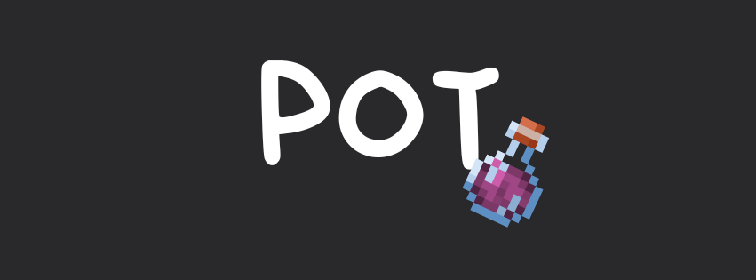

Consejos básicos:
Aunque el kit estándar de espada proporciona la base de cómo pelear, tu puntería (aim) cambiará drásticamente debido al efecto de Velocidad II (Speed II) presente en el kit. Por lo tanto, se recomienda a los jugadores practicar en el kit de Velocidad (a veces etiquetado como "ninja") para acostumbrarse al nuevo efecto de velocidad.
La velocidad de curación y de recarga (refill) juega un papel muy importante, al igual que el uso de atajos de teclado (hotkeying). Modifica tus asignaciones de teclas (keybinds) a lo que mejor se adapte a ti. Aunque usar la rueda del ratón (scrollwheel) puede ser excelente para los principiantes, será muy molesto a largo plazo; un jugador que depende de los atajos en lugar de la rueda del ratón se curará, la mayoría de las veces, más rápido que uno que usa la rueda. Para las recargas (colocar pociones en tu barra de acceso rápido), practica el butterfly clicking, usar la tecla Shift y apuntar con precisión a las pociones que deseas.
Intenta jugar cerca de tu oponente haciendo golpes críticos (crits) y reinicios de salto (jump resets) si tiene poca vida, de modo que puedas golpearlo y robarle los efectos de las pociones cuando se gire para curarse.
Consejos básicos:
Tu estilo de pelea principal en este kit es hacer p-critting (críticos perfectos/precisos) con golpes ocasionales de empuje (knockback) para mantener cierta distancia y conectar golpes extra a tu oponente.
Las manzanas doradas (gapples) deben ir en tu mano secundaria (offhand). No te pongas un tótem a menos que vayas a hacer un Deivi popping (explicado más adelante); si tienes un tótem en la mano secundaria, tendrías que usar un atajo de teclado para cambiar a tus manzanas doradas, a diferencia de cuando las tienes en la mano secundaria, donde solo necesitas mantener presionado el clic derecho para comer. Esto hace que no tengas que reiniciar tu temporizador de ataque (cooldown) después de comer.
Puedes hacerle combos a los oponentes, pero no conviertas esto en tu estilo principal, ya que la armadura de netherite tiene una resistencia pasiva al empuje que anula el knockback, así como el jump resetting. El intercambio selectivo de golpes (hit-selecting) tampoco funciona, así que no confíes principalmente en tus habilidades de espada para ganar en peleas de nethpot, ya que hacer críticos y medir los tiempos (timing) son mucho más importantes.
Nunca uses la rueda del ratón (scrollwheel); fuérzate a usar tus atajos de teclado para lanzar pociones rápido.
Engaño (Deception): Intenta huir por un momento y, en el momento menos esperado, hazles un W-tap de frente y comboéalos. También puedes reventarlos a críticos en lugar de hacer W-tap, dependiendo de tu preferencia.
Consejos avanzados:
Efecto Espejo (Mirroring): Cuando tu oponente coma una manzana (gap), hazlo tú justo después de él. Esto dará como resultado que tengas más curación activa que tu oponente.
Strafing: Cuando estés en un intercambio de p-crits, presiona la tecla S y luego haz W-tap para meter en un combo al oponente.
Deivi Popping: Una técnica creada por Deivi_17. Cuando tengas pocos efectos activos, ponte un tótem en la mano secundaria y asegúrate de tener al menos 2 pociones de curación, una poción de fuerza y otra de velocidad. Luego realiza un movimiento suicida: justo después de que tu tótem se active (explote), lánzate inmediatamente todas tus pociones al suelo para ganar el enfrentamiento. No se recomienda cuando tu oponente tiene mucha más vida que tú (como más de 6 corazones) o cuando él también se esté comiendo una manzana.
| HACHA |